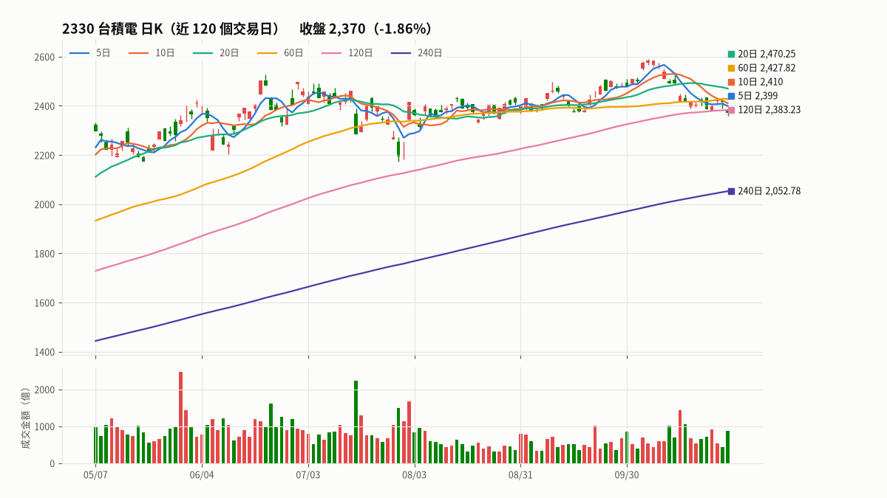
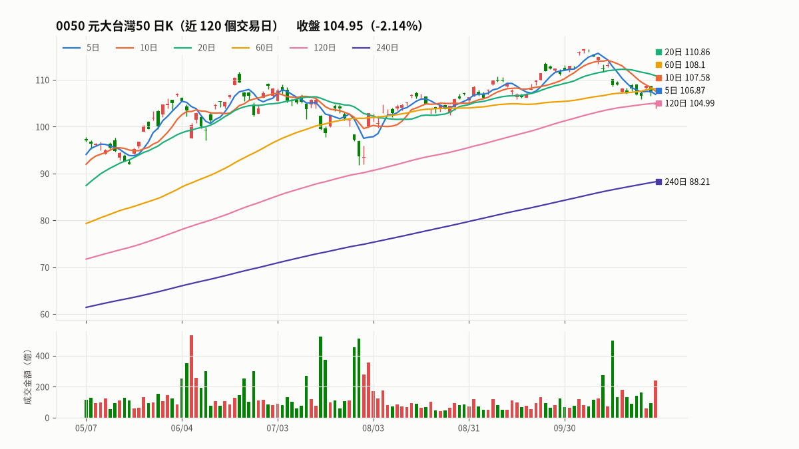
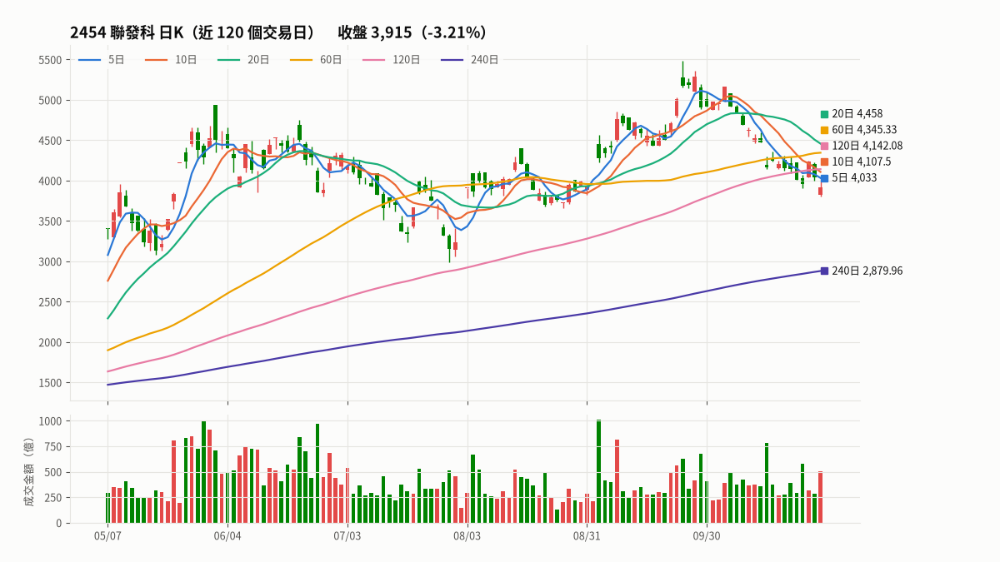
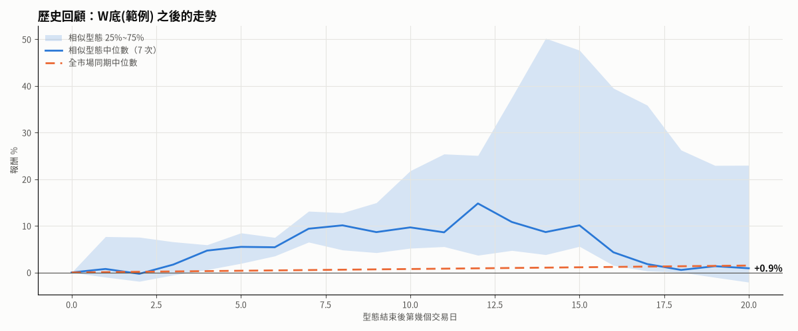

👀 個股追蹤 2026-10-30（五）
💤 今天（10/31）休市，以下是最近一個交易日的資料
| 代號 | 名稱 | 收盤 | 漲跌 | 量（倍） | 近20日 | 均線位置 | 支撐壓力 | 法人（張） | 符合 |
|---|---|---|---|---|---|---|---|---|---|
| 2330 | 台積電 | 2,370 | -1.86% | 1.3 | -4.2% | 在 240 日線之上，5、10、20、60、120 日線之下 | 跌破 5日線（週線） 2,399、120日線（半年線） 2,383.23，下一個支撐是 240日線（年線） 2,052.78（距離 15.5%） | -5,856 | 外資連續賣超、箱型整理 |
| 0050 | 元大台灣50 | 104.95 | -2.14% | 1.9 | -5.7% | 在 240 日線之上，5、10、20、60、120 日線之下 | 跌破 120日線（半年線） 104.99，下一個支撐是 240日線（年線） 88.21（距離 19.0%） | -162,735 | 外資連續賣超 |
| 2454 | 聯發科 | 3,915 | -3.21% | 1.5 | -20.3% | 在 240 日線之上，5、10、20、60、120 日線之下 | 還沒到支撐：最近的支撐是 240日線（年線） 2,879.96（距離 35.9%） | -2,187 | 外資連續賣超、破底翻 |
2330 台積電 2,370 ▼45（-1.86%）

日K：小黑K、跳空下跌（缺口 2,380～2,390）（開 2,380｜高 2,380｜低 2,360｜收 2,370）
量能：成交 36,616 張（868.3 億），是 20 日均量的 1.3 倍（量平）
漲跌：近5日 -2.1%｜近20日 -4.2%｜近60日 -2.0%｜距 60 日高點 -8.3%
法人：外資 -8,633｜投信 +1,855｜自營商 +922｜合計 -5,856 張（外資連賣 16 天、法人 5 日 -15,213 張）（10/30）
融資融券：融資 34,961（-382，使用率 0.5%）｜融券 9（-7）｜券資比 0.0%（10/30）
大戶：400 張以上大股東 87.1%，週增減 -0.03（10/30）
符合：外資連續賣超、箱型整理
均線：在 240 日線之上，5、10、20、60、120 日線之下｜均線交錯
- 跌破 5日線（週線） 2,399、120日線（半年線） 2,383.23，下一個支撐是 240日線（年線） 2,052.78（距離 15.5%）
- 上方壓力：120日線（半年線） 2,383.23（距離 0.6%）
| 均線 | 數值 | 收盤距離 | 方向 | 今天 |
|---|---|---|---|---|
| 5日線（週線） | 2,399 | -1.21% | ↘ 下彎 | 跌破（壓力） |
| 10日線（雙週線） | 2,410 | -1.66% | ↘ 下彎 | 在下方（壓力） |
| 20日線（月線） | 2,470.25 | -4.06% | ↘ 下彎 | 在下方（壓力） |
| 60日線（季線） | 2,427.82 | -2.38% | ↘ 下彎 | 在下方（壓力） |
| 120日線（半年線） | 2,383.23 | -0.56% | ↗ 上揚 | 跌破（壓力） |
| 240日線（年線） | 2,052.78 | +15.45% | ↗ 上揚 | 在上方（支撐） |
0050 元大台灣50 104.95 ▼2.3（-2.14%）

日K：小紅K、跳空下跌（缺口 105.3～106.6）、開低走高、長下影線（下檔有買盤）（開 104.8｜高 105.3｜低 103.85｜收 104.95）
量能：成交 227,284 張（237.5 億），是 20 日均量的 1.9 倍（量增）
漲跌：近5日 -3.0%｜近20日 -5.7%｜近60日 +2.0%｜距 60 日高點 -9.9%
法人：外資 -97,980｜投信 +2,609｜自營商 -67,364｜合計 -162,735 張（外資連賣 16 天、法人 5 日 -371,009 張）（10/30）
融資融券：融資 26,635（+945，使用率 0.5%）｜融券 243（-96）｜券資比 0.9%（10/30）
大戶：400 張以上大股東 24.7%，週增減 +0.00（10/30）
符合：外資連續賣超
均線：在 240 日線之上，5、10、20、60、120 日線之下｜均線交錯
- 跌破 120日線（半年線） 104.99，下一個支撐是 240日線（年線） 88.21（距離 19.0%）
- 上方壓力：120日線（半年線） 104.99（距離 0.04%）
| 均線 | 數值 | 收盤距離 | 方向 | 今天 |
|---|---|---|---|---|
| 5日線（週線） | 106.87 | -1.80% | ↘ 下彎 | 在下方（壓力） |
| 10日線（雙週線） | 107.58 | -2.44% | ↘ 下彎 | 在下方（壓力） |
| 20日線（月線） | 110.86 | -5.33% | ↘ 下彎 | 在下方（壓力） |
| 60日線（季線） | 108.1 | -2.91% | ↗ 上揚 | 在下方（壓力） |
| 120日線（半年線） | 104.99 | -0.04% | ↗ 上揚 | 跌破（壓力） |
| 240日線（年線） | 88.21 | +18.97% | ↗ 上揚 | 在上方（支撐） |
2454 聯發科 3,915 ▼130（-3.21%）

日K：長紅K、跳空下跌（缺口 3,990～4,000）、開低走高（開 3,820｜高 3,990｜低 3,805｜收 3,915）
量能：成交 13,044 張（507.3 億），是 20 日均量的 1.5 倍（量平）
漲跌：近5日 -5.4%｜近20日 -20.3%｜近60日 +10.1%｜距 60 日高點 -25.9%
法人：外資 -2,953｜投信 +673｜自營商 +93｜合計 -2,187 張（外資連賣 16 天、法人 5 日 -5,741 張）（10/30）
融資融券：融資 12,379（+162，使用率 3.1%）｜融券 29（+6）｜券資比 0.2%（10/30）
大戶：400 張以上大股東 72.2%，週增減 -0.15（10/30）
符合：外資連續賣超、破底翻
📅 今天 法說會（15:00）
均線：在 240 日線之上，5、10、20、60、120 日線之下｜均線交錯
- 還沒到支撐：最近的支撐是 240日線（年線） 2,879.96（距離 35.9%）
- 上方壓力：5日線（週線） 4,033（距離 2.9%）
| 均線 | 數值 | 收盤距離 | 方向 | 今天 |
|---|---|---|---|---|
| 5日線（週線） | 4,033 | -2.93% | ↘ 下彎 | 在下方（壓力） |
| 10日線（雙週線） | 4,107.5 | -4.69% | ↘ 下彎 | 在下方（壓力） |
| 20日線（月線） | 4,458 | -12.18% | ↘ 下彎 | 在下方（壓力） |
| 60日線（季線） | 4,345.33 | -9.90% | ↗ 上揚 | 在下方（壓力） |
| 120日線（半年線） | 4,142.08 | -5.48% | ↗ 上揚 | 在下方（壓力） |
| 240日線（年線） | 2,879.96 | +35.94% | ↗ 上揚 | 在上方（支撐） |
🔍 型態掃描
W底(範例)（40 天）
目前沒有相似度 ≥85% 的股票
歷史相似型態 10 次，樣本少：5天 平均+3.8%／上漲80%、10天 平均+12.9%／上漲80%、20天 平均+11.0%／上漲57%｜全市場同期 20天 平均+5.5%／上漲55%
說明
- 均線、支撐壓力的判斷和盤勢解析相同（config「盤勢解析」的均線與門檻）；均線和漲跌用還原股價，收盤價是實際價格。
- 量能：今天成交量和前 20 日均量比較，1.5 倍以上是量增、0.7 倍以下是量縮。
- 融資融券每天晚上 9:30 才公布，傍晚的報告是前一個交易日的；大戶是集保每週五更新的 400 張以上大股東比例。
- 「符合」是 config「選股」裡今天成立的條件組（含 K 線型態）。
※ 依固定規則整理的盤後資料，僅供參考，不構成投資建議
